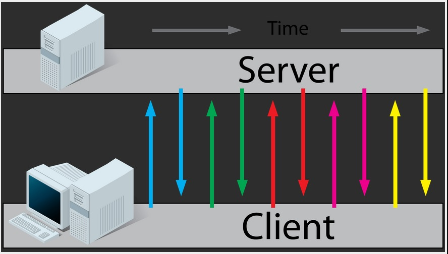

HTML5 Communications
Cross Document Messaging
XMLHttpRequest Level 2
ServerSent Event
WEBSOCKET
Cross Document Messaging
postMessage API
if (typeof window.postMessage === “undefined”) {
// postMessage not supported in this browser
}
// in the recipient code
recipient.onmessage = function (event) {
console.log('received message: ' + event.data);
};
// from the sender code
recipient.postMessage('hi there');
XMLHttpRequest Level 2
the new version of XMLHttpRequest
- Cross-origin XMLHttpRequests
- Progress events
- Binary Data
ServerSent Event
WebSocket
For RealTime
“Reducing kilobytes of data to 2 bytes…and reducing latency from 150 ms to 50 ms is far more than marginal. In fact, these two factors alone are enough to make WebSocket seriously interesting to Google.”
- Protocol
- allows for a persistent, full-duplex communication between a client and remote host.
- HTML5
- defines a JavaScript API for the WebSocket protocol within the browser, allowing bi-directional communication between the browser and server.
Why ?
Web apps need to communicate with server in real-time
Can't we already do that ?
Ajax Polling
Client sends AJAX request to server, server responds
Works When:
- client needs to request data occasionally
- client needs to send data occasionally
Falls short When:
- client needs to send data often
- server needs to iniate and send data without client request
AJAX Long-polling
Client sends AJAX request to server, server keeps request open until response available.
Client immediately sends another long-poll request after receiving response

Works When:
- client needs to request one or a few pieces of data at a time
- server needs to send one or a few pieces of data occastionally
Falls short When:
- client needs to send data often
- client needs initiate and send data when available
- server needs to send data often
Server-Sent Events(SSE)
Client opens connection with server
Server sends data to client as it becomes available
Works When:
- server needs to send data often
- browser support for WebSockets can't be relied upon
Falls short When:
- client needs to send any data
WEBSOCKETS
Client opens connection with server
Client and server send data to each other as data becomes available on either side
Works When:
- server and/or client need to send data often
- browser support for WebSockets can be relied upon or fallbacks can be used
Falls short When:
- fallbacks can't be relied upon